Las tropas agresoras encontrarían un país indefenso y una población destruida , muerta o incapacitada , pero con sus ciudades y recursos industriales intactos.
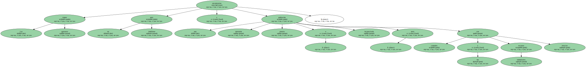En cuanto a los inconvenientes , se constató que , aunque era fácil cultivar grandes cantidades de agentes infecciosos , no lo era en absoluto el diseño de los vehículos adecuados para su diseminación.
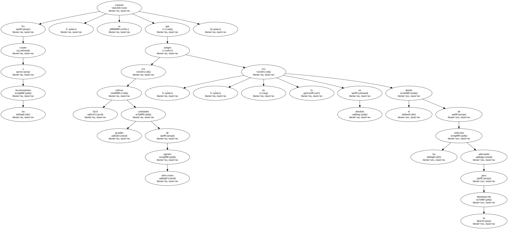Pero el problema más importante residía en cómo limpiar las zonas infectadas una vez que las armas biológicas hubiesen cumplido su misión.
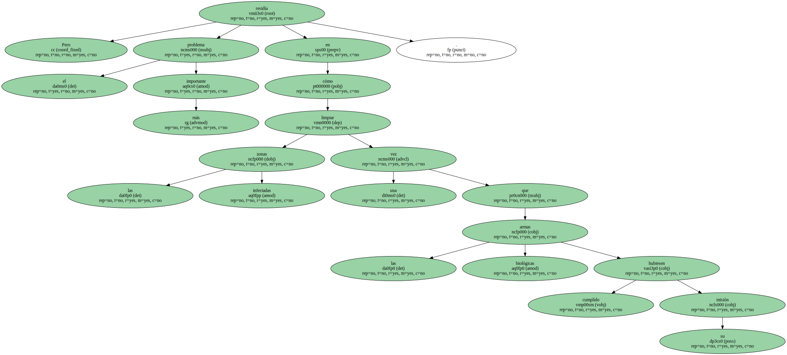Durante la Segunda Guerra Mundial , los británicos , que ensayaron todo tipo de armas ante el temor de una invasión alemana , bombardearon con bacterias de carbunco el despoblado islote de Gruinard , localizado en la costa noroeste de Escocia y que sólo se utilizaba como lugar de pastoreo para el ganado ovino.
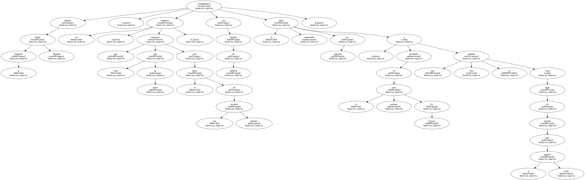En los años ochenta se comprobó que la isla seguía contaminada y que podría permanecer así durante más de un siglo , si no se procedía a una concienzuda y costosa desinfección , que finalmente se realizó.
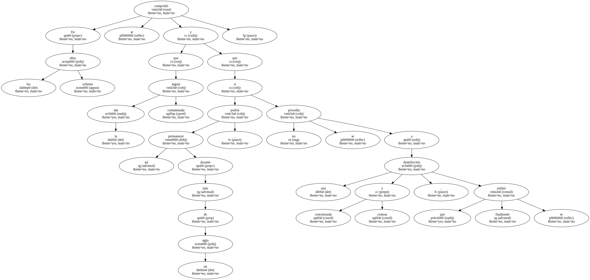El carbunco es una enfermedad del ganado , pero también puede contagiar al hombre : las esporas del Bacillus anthracis son inhaladas por las vías respiratorias , progresan a través de las mucosas de los bronquios y se instalan en los alvéolos pulmonares , donde generan una fuerte infección , casi siempre fatal.
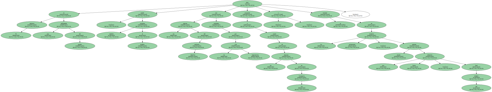En 1943 , como alternativa a la bomba atómica - en cuyo desarrollo ya se había comenzado a investigar - , los Estados Unidos se dispusieron a fabricar bombas de carbunco y más adelante de toxinas botulímicas.
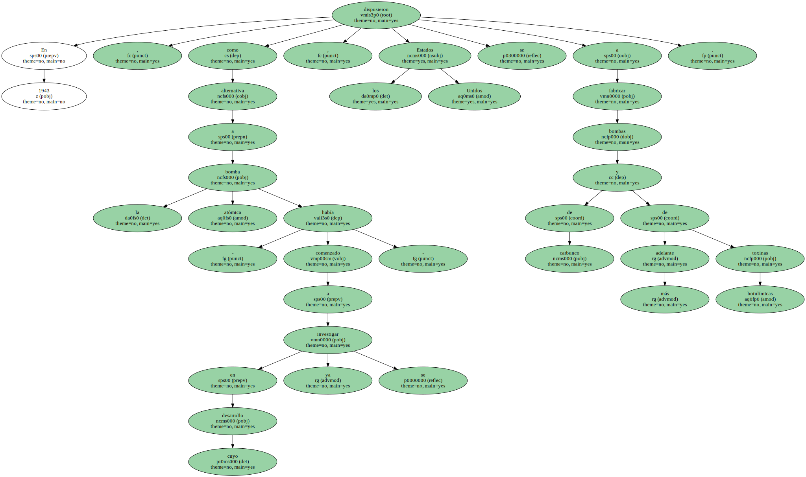Este potente veneno gastrointestinal es en realidad una proteína neurotóxica que , absorbida por el intestino , pasa a la sangre y alcanza el sistema nervioso , con terribles efectos para la víctima : visión doble o borrosa por dilatación de las pupilas , calambres musculares y parálisis progresiva de los músculos.
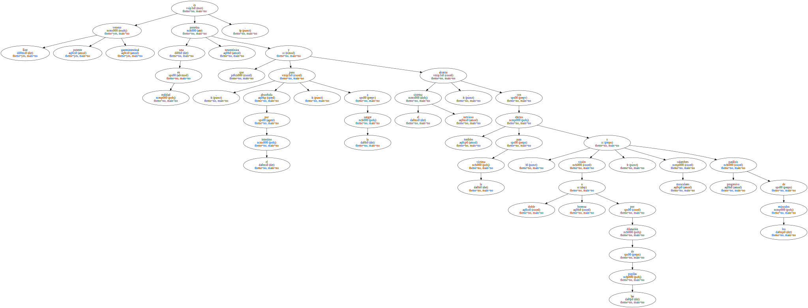Este potente veneno gastrointestinal es en realidad una proteína neurotóxica que , absorbida por el intestino , pasa a la sangre y alcanza el sistema nervioso , con terribles efectos para la víctima : visión doble o borrosa por dilatación de las pupilas , calambres musculares y parálisis progresiva de los músculos.
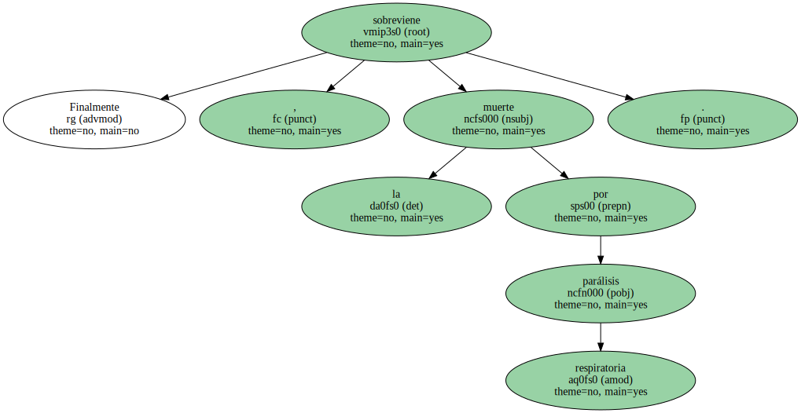Este potente veneno gastrointestinal es en realidad una proteína neurotóxica que , absorbida por el intestino , pasa a la sangre y alcanza el sistema nervioso , con terribles efectos para la víctima : visión doble o borrosa por dilatación de las pupilas , calambres musculares y parálisis progresiva de los músculos.
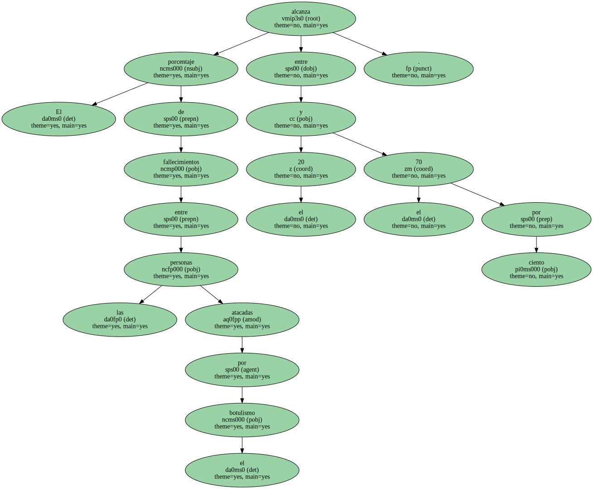Este potente veneno gastrointestinal es en realidad una proteína neurotóxica que , absorbida por el intestino , pasa a la sangre y alcanza el sistema nervioso , con terribles efectos para la víctima : visión doble o borrosa por dilatación de las pupilas , calambres musculares y parálisis progresiva de los músculos.

Este potente veneno gastrointestinal es en realidad una proteína neurotóxica que , absorbida por el intestino , pasa a la sangre y alcanza el sistema nervioso , con terribles efectos para la víctima : visión doble o borrosa por dilatación de las pupilas , calambres musculares y parálisis progresiva de los músculos.

Este potente veneno gastrointestinal es en realidad una proteína neurotóxica que , absorbida por el intestino , pasa a la sangre y alcanza el sistema nervioso , con terribles efectos para la víctima : visión doble o borrosa por dilatación de las pupilas , calambres musculares y parálisis progresiva de los músculos.
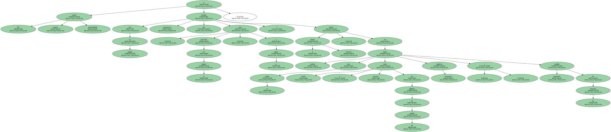Este potente veneno gastrointestinal es en realidad una proteína neurotóxica que , absorbida por el intestino , pasa a la sangre y alcanza el sistema nervioso , con terribles efectos para la víctima : visión doble o borrosa por dilatación de las pupilas , calambres musculares y parálisis progresiva de los músculos.
Este potente veneno gastrointestinal es en realidad una proteína neurotóxica que , absorbida por el intestino , pasa a la sangre y alcanza el sistema nervioso , con terribles efectos para la víctima : visión doble o borrosa por dilatación de las pupilas , calambres musculares y parálisis progresiva de los músculos.

Finalmente , sobreviene la muerte por parálisis respiratoria.
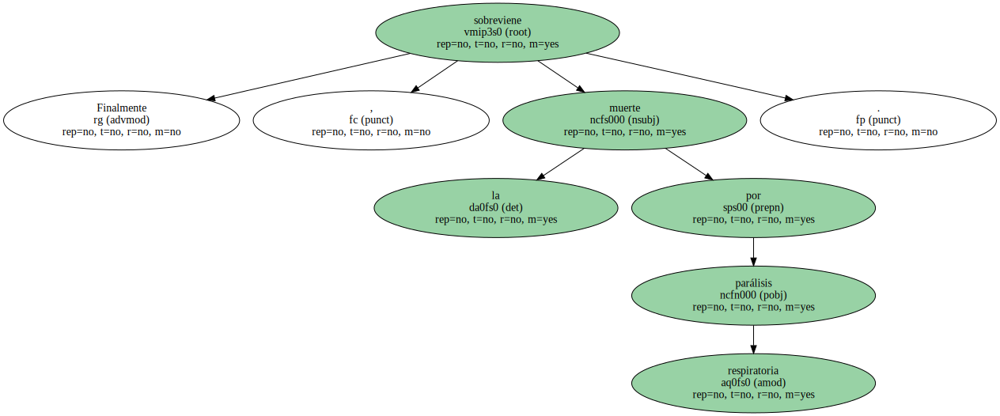El porcentaje de fallecimientos entre las personas atacadas por el botulismo alcanza entre el 20 y el 70 por ciento.
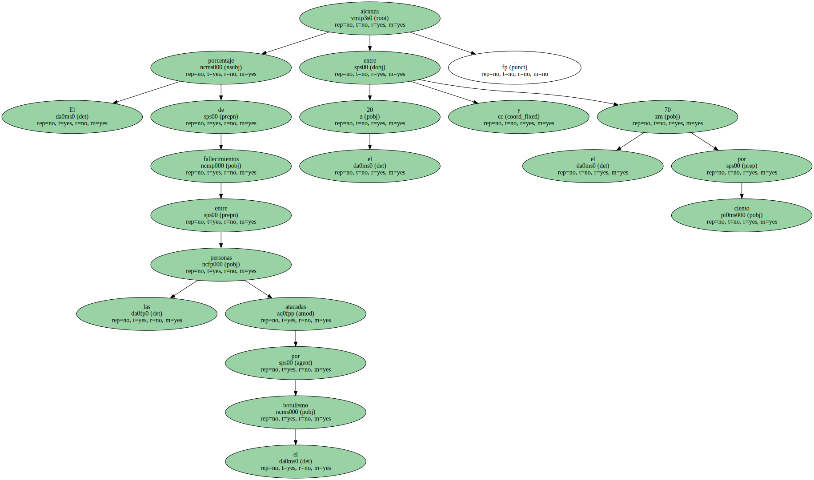